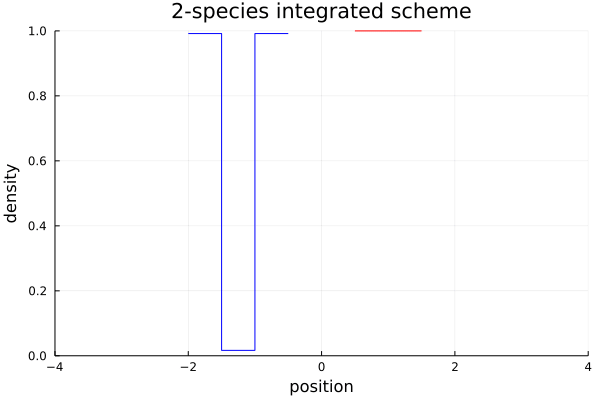

Examples
Jupyter Notebook examples
- fancy example with time-dependend velocity field and interaction,
- traffic model.
Two species example
using ConservationLawsParticles
using RecursiveArrayTools, DifferentialEquations, Plots
# external velocities
Vr(t, x) = 2.
Vl(t, x) = -2.
# interactions
W_attr(t, r) = 5 * log(abs(r) + 1)
W_rep(t, r) = -2 * log(abs(r) + 1)
W(t, r) = 2 * (exp(abs(r)/4) + exp(-2abs(r)))
# mobilities
mobρ(ρ, σ) = max(2 - ρ - 0.5σ, 0)
mobσ(ρ, σ) = max(2 - σ - 0.5ρ, 0)
imodel = IntegratedModel(
(Vr, Vl),
((W, W_rep),
(W_rep, W)),
(mobρ, mobσ))
n = 20
x0 = ArrayPartition(
vcat(range(-2., -1.5, length=n), range(-1., -.5, length=n)),
vcat(range(.5, 1.5, length=2n)))
tspan = (0., 1.2)
prob = ODEProblem(velocities!, x0, tspan, imodel)
sol = solve(prob, BS5(), reltol=1e-6, abstol=1e-6)
plot(legend=false)
plot!(sol, vars=1:2n, color=:blue)
plot!(sol, vars=2n+1:4n, color=:red)
plot!(title="2-species integrated scheme", xlabel="time", ylabel="position")
savefig("two-species.png")
n = 60
x0 = ArrayPartition(
vcat(range(-2., -1.5, length=n), range(-1., -.5, length=n)),
vcat(range(.5, 1.5, length=2n)))
prob = ODEProblem(velocities!, x0, tspan, imodel)
sol = solve(prob, BS5(), reltol=1e-7, abstol=1e-7)
anim = @animate for t in tspan[1]:1/48:tspan[2]
p = plot(title="2-species integrated scheme", xlabel="position", ylabel="density",
legend=false, xlims=(-4,4), ylims=(0,1))
plot_density!(p, sol(t).x[1], color=:blue)
plot_density!(p, sol(t).x[2], color=:red)
end
gif(anim, "two-species.gif")